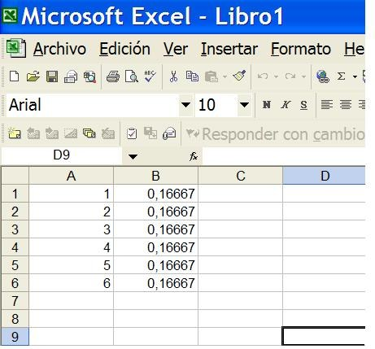
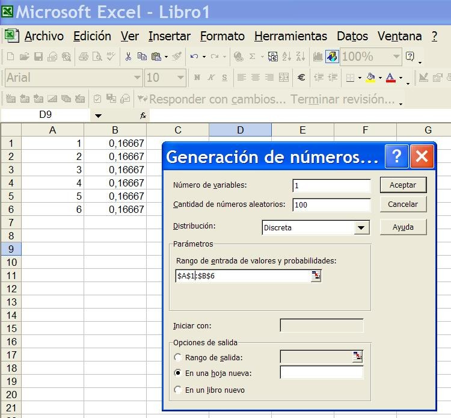
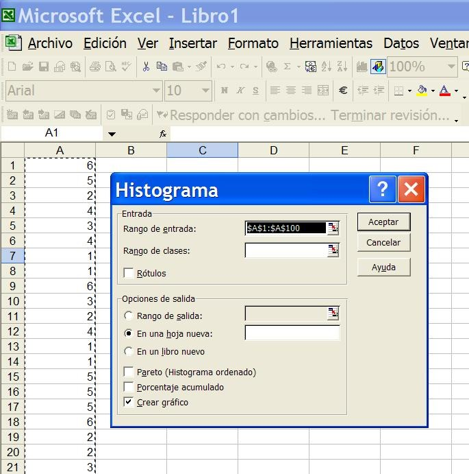

5. Probabilidad
Los objetivos de este módulo son los siguientes:
a) realizar simulaciones elementales de números aleatorios con Excel.
b) conocimiento general de las siete reglas de la probabilidad.
El material de lectura es el archivo "5.pdf" del material de clase, que se encuentra claramente dividido en:
Bloque 1) general introductorio (transparencias 1 a 10)
Bloque 2) siete reglas de probabilidad (transparencias 11 a 18)
Bloque 3) aplicaciones de reglas de probabilidad (transparencias 19 a 29)
Nota: No se complique el alumno demasiado la vida con el método de la Tabla de Verdad (transparencias 26 a 29, para resolver el problema de la nº 25); la transparencia 30 resuelve lo mismo de forma mucho más intuitiva.
Bloque 4) árbol de decisión (transparencia 30)
Se sugiere al alumno que obtenga de forma práctica los resultados de la transparencia 6 (lanzamientos de un solo dado) y la 8 (lanzamientos de dos dados simultáneos). ¡No es necesario lanzar los dados 500 veces, con 50 es suficiente para poder apreciar el comportamiento aleatorio del proceso!
Posteriormente se sugiere trabajar en la simulación numérica de datos mediante Excel. El alumno deberá insatarse el complemento para el análisis de datos (Herramientas>>Complementos). Con esto se pueden simular datos de una cierta variedad de procesos (bernouilli, Poisson, normal, etc.)
Vamos a simular los lanzamientos de los dados. Lo primero es construir la tabla de probabilidad (ver transparencia nº 9), tenemos:

Haga Herramientas>>Análisis de Datos>>Generación de Números Aleatorios

Ahora genere el Histograma, haciendo Herramientas>>Análisis de Datos>>Histograma

Y... ¡ya tenemos nuestro histograma!

|
Lo más sencillo es observar un gran número de veces el resultado del proceso en funcionamiento, y calcular la relación entre el número de casos favorables y el número de casos posibles.
| |
|
No se puede determinar la probabilidad de un suceso mediante la observación del mismo, puesto que el resultado es impredecible en cada caso.
| |
|
La observación del proceso real no aporta mucha utilidad, dado que el resultado será diferente cada vez.
|